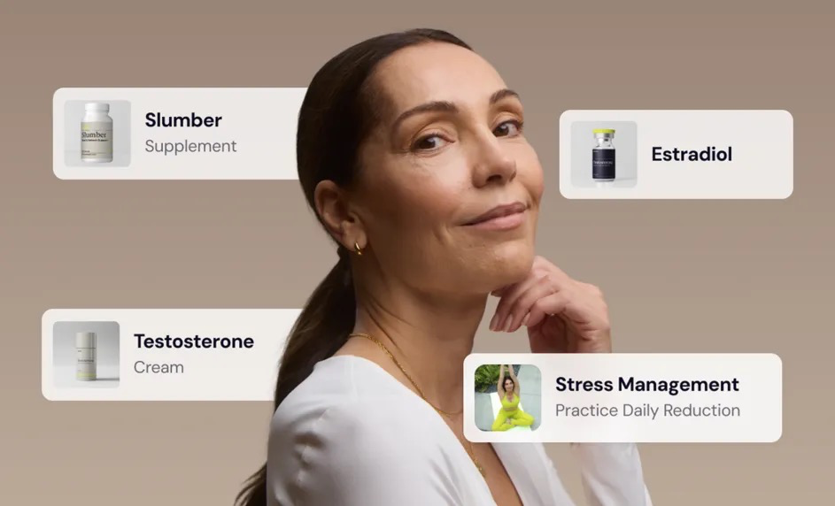

Finally, a doctor who listens.
We test 50+ hormone markers to uncover the real answers your doctor never looked for.
Get the Answers You DeserveTHE TRADITIONAL HEALTHCARE MYTH
What your doctor's office looks like vs. what it should.
The traditional healthcare system was designed for efficiency, not for you. Annual physicals check the basics. Insurance dictates what gets tested. And if your symptoms don't fit a standard checklist, you leave with a pamphlet and a "come back in six months." Hone is built differently.
Traditional Care
Comprehensive biomarker testing — 50+ markers
12-minute annual phycal
From test to treat in less than 10 days
Months on a waitlist
We test everything that matters
Insurance decides what gets tested
Proactive care with a personalized treatment plan
Told to "come back if it gets worse"
A plan built for your body, your symptoms, your goals
One-size-fits-all advice
Board-certified hormone specialists, on demand
Referral required to see a specialist
Your labs and how you feel both matter here
"Your labs look normal"
4 IN 10 women feel dismissed by their doctors when discussing hormone symptoms.
80% of women don't know their hormones are off — because no one tested them.
1 IN 3 women deal with fatigue, weight gain, or mood swings from hormone imbalances that go undiagnosed.
"Your results look fine." But you knew something was wrong.
If you've heard any of these, you weren't being oversensitive. You were being dismissed.
Women are signifmore likely than men to have their symptoms minimized, misattributed, or ignored by their doctors. And when the symptoms are hormonal — fatigue, brain fog, weight gain, low libido, mood swings — they're almost always blamed on lifestyle, anxiety, or age.
Your body was telling you something real. It deserved a real answer.
“Finally a doctor that believes me!” — Soraya Farmer, Hone Member
“Finally an MD who goes beyond the basics” — Lorrie, Hone Member
“This was by far the absolute BEST 45 mins of conversation I've had about my health in 8 years.” — Mrs. S Thomas, Hone Member
THE GAP WAS NEVER YOU. IT WAS THE SYSTEM.
Two things fail women in traditional healthcare simultaneously.
What gets tested, and who gets to decide. Standard panels miss the markefree testosterone, estradiol, progesterone, and comprehensive thyroid function. And even when a woman pushes for more, insurance gatekeeping, referral loops, and 12-minute appointments make it nearly impossible to get a full picture.
Hone closes both gaps.
We test 50+ biomarkers — including the hormonal, metabolic, and thyroid markers most standard physicals skip. No insurance approval needed. No referral required. Just a board-certified hormone specialist, your full results, and a treatment plan built around what your body actually needs.
FSA/HSA eligible. Because your health shouldn't cost more just because insurance won't cover it.
Monitor for early indicators of thousands of diseases.
- Establish your biomarker baselines
- Monitor Body Changes
- Physician-led care
Low testosterone · Hormone Imbalance · Brain Fog · Low Ergy · Hot Flashes · Inflammation · Impaired Cognition · Leukocytosis · Night Sweats · Shortness of Breath · Unexplained Weight Loss · Leukopenia · Anemia · Vitamin deficiency · Thrombocytopenia · Thrombocytosis · Hyperglycemia · Hypoglycemia · Kidney Disease
Adrenal Disorders · Estrogen Dominance · Menopause · Perimenopause · Hypogonadism · PCOS · Hashimoto's · Hypothyroidism · Pancreatitis · Non Alcoholic Fatty Liver Disease · Type 2 Diabetes · Metabolic Syndrome · Coronary Artery Disease · Cardiovascular Disease · Liver Disease · Electrolyte Imbalance · High Blood Pressure · Hypertensive Nephrosclerosis · Diabetic Nephropathy
What We Test
Every 3 months, we test 50+ biomarkers that reflect how your body is functioning—and where there's room to optimize.
Weight Loss
+Longevity
+Vitality
+Sexual Health
+Cardiac Risk
+Strength
+Brain Health
+Stop guessing. Start knowing.

1. Test what they missed
We analyze 50+ hormone and health markers — including the ones your annual physical skipped — to uncover what's actually behind your symptoms. Visit one of 2,000+ lab locations near you.

2. Get a real diagnosis
Your results are reviewed by a board-cert hormone specialist — not a general practitioner working off a 10-minute appointment. You get a clear, plain-language breakdown of what's happening and why.

3. Follow a plan built for you
No generic advice. A treatment plan tailored to your body, your symptoms, and your goals — with ongoing support included. Retesting every 3 months so your plan evolves as you do.
FINALLY HEARD
Thousands of women found the answers they deserved.
Struggling with being dismissed can feel isolating — but you're not alone.
★★★★★
I felt heard
“Wonderful talk. Labs and health concerns discussed in detail. I felt very "heard" in a field I do not often feel heard in.”
Melissa, Hone Member
★★★★★
Finally a doctor that believes me!
“So happy to finally have a doctor that is educated in menopause. I've been told there is no helping with menopause by my GP and OBGYN. We need to look outside our medical system to be treated as deserving someday this is the norm!”
Soraya Farmer, Hone Member
★★★★★
A "whole me" perspective
“My provider took great care to understand my full background, my treatment preferences, my risk tolerance, and my lifestyle and truly came at my care recommendations from a "whole me" perspective. Absolutely amazing!”
Audra Kirkland, Hone Member
★★★★★
Finally an MD who goes beyond the basics
“The MD I saw was the first person ever (after many years) to address my thyroid issue beyond just managing TSH.”
Lorrie, Hone Member
★★★★★
Finally an affordable way to get help
“So excited to finally find an affordable way to get help with my hormones! I put it off for a year because I couldn't afford the $1000 lab work my primary doctor recommended — and they didn't even test as many levels as Hone. Overall the experience is 5 star.”
Dolores, Hone Member
★★★★★
HIGHLY RECOMMEND
“This was by far the absolute BEST 45 mins of conversation I've had about my health in 8 years. I've beeom health professionals. It was rewarding to learn I was on the right track AND now able to find viable alternatives.”
Mrs S Thomas, Hone Member
★★★★★
Concierge-level care
“When was the last time you felt heard and had your priorities honored in a healthcare setting? Prepare yourself to be happily surprised at the level of diligence in communication and quality of care. This is concierge-level care — and it's practical and affordable!”
Laura D C, Hone Member
★★★★★
Finally feel like getting back to normal
“Having a doctor that really understands what is going on with my body is a great feeling! I haven't had much hope in feeling like normal in close to a year. I finally feel like there's a good chance that I will be getting back to normal!”
Ann Marie Gunn, Hone Member
★★★★★
Everyone over 45 should do this
“I fully recommend Hone to everyone. From start to finish this was such a great experience. The functional medicine doctor I met with was so personable, knowledgeables are so important to your well being. Thank you Hone!!”
Carrie H, Hone Member
What’s Included


Optimal Health Biomarker Test
Includes 50+ key biomarkers
Test at 2,000+ lab locations
Trusted by 10,000+ women to optimize their health
$165 $65

Physician Consultation
Talk 1:1 with a board-certified doctor
Get your questions answered, fast
Included

Personalized Treatment Plan
Comprehensive test results
Biomarker breakdown
Tailored prescriptions
Included
Limited time discountSaving $100
ShippingFree
TotalUS $65
Personalized care, your preferred treatment method.

Menopause Relief
Ignite your libido, boost your mood, sculpt your body, and enhance your brainpower and bone health. Available as a cream or injectable.
Learn More
Weight Management
Along with a comprehensive weight loss plan, curb cravings, normalizing metabolism, improve body composition, break down stored fat, and avoid the loss of muscle mass to improve mood and increase energy levels.
Learn More
Balance Thyroid Hormones
Get a hypothyroidism care plan to improve metabolism, mood, and general hormone levels. Hone offers synthetic and naturally-derived options.
Learn More
Longevity
Explore the leading edge of longevity treatments to enhance both healthspan and lifespan with Hone's advanced treatments and supplements.
Learn More
Improve Sexual Function
Ignite passion and make sex more comfortable. Whether you need a kickstart or need to address hypoactive sexual desire disorder, we've got you covered.
Learn More
Enhance Appearance
Grow more than just confidence with FDA-approved regrowth treatments Finasteride & Minoxidil, which can help you stop hair loss and regrow thicker, fuller hair.
Learn MoreWHAT’S YOUR DOCTOR MISSING?
FAQ
Common questions.
Still on the fence? We get it. Here are the questions we hear most.
YOUR NEXT STEP
You’ve been patient long enough.
You deserve a doctor who takes your symptoms seriously, runs the right tests, and builds a plan around what your body actually needs — not what's easiest to explain away.
I’m Ready to Start